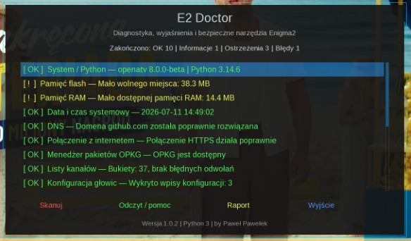
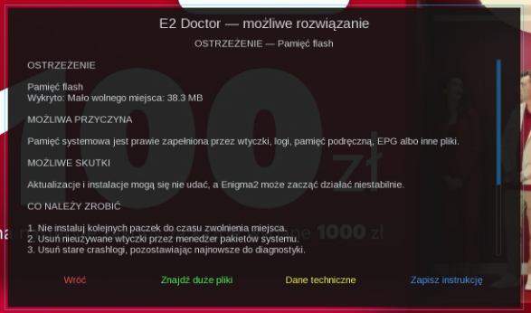
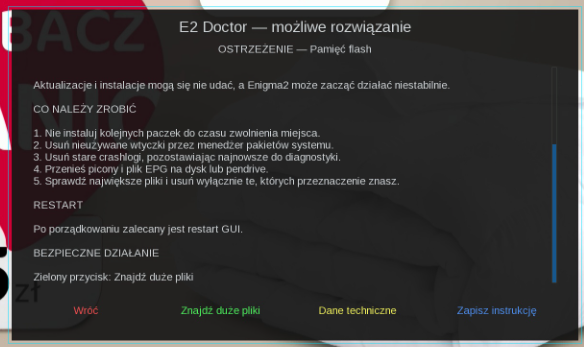

Witam na mojej stronie Paweł Pawełek
Nowa wtyczka diagnostyczna
🩺 E2 Doctor 1.0.2
Udostępniam pierwszą wersję wtyczki E2 Doctor przeznaczonej dla dekoderów Enigma2 z Pythonem 3. Wtyczka ułatwia rozpoznawanie problemów z dekoderem i pokazuje, co działa poprawnie, co wymaga uwagi, a gdzie wykryto błąd.

Do czego służy
E2 Doctor został przygotowany po to, aby ułatwić użytkownikom rozpoznawanie problemów z dekoderem. Zamiast szukać przyczyny na podstawie przypadkowych komunikatów lub zdjęć ekranu, wtyczka wykonuje skanowanie systemu i pokazuje wynik w czytelnej formie.
Plik: enigma2-plugin-extensions-e2doctor_1.0.2_all.ipk 25.1 KB
Wersja: 1.0.2
System: Enigma2 Python 3
Instalacja: z pliku IPK
Autor: by Paweł Pawełek
Czytelne oznaczenia wyników
- 🟢 zielony — wszystko działa poprawnie
- 🟡 żółty — ostrzeżenie wymagające sprawdzenia
- 🔴 czerwony — wykryty błąd
- 🔵 niebieski — informacja techniczna
Wtyczka została już sprawdzona na dekoderze i działa poprawnie. Osoby, które ją przetestują, mogą zgłaszać zauważone problemy oraz propozycje kolejnych funkcji.
Co sprawdza E2 Doctor?
- system, wersję obrazu, architekturę i Pythona
- wolne miejsce we flashu oraz pamięć RAM
- datę i czas systemowy
- połączenie z internetem, DNS i HTTPS
- działanie menedżera pakietów OPKG
- listy kanałów i brakujące odwołania do bukietów
- konfigurację głowic
- dyski, pendrive’y i punkty montowania
- plik EPG oraz katalogi piconów
- działanie OSCam
- ostatnie crashlogi i najczęstsze błędy Enigma2
Pomoc i możliwe rozwiązania
Po zaznaczeniu wykrytego problemu i naciśnięciu OK wtyczka pokazuje:
- co dokładnie zostało wykryte
- możliwą przyczynę
- możliwe skutki
- instrukcję postępowania krok po kroku
- informację, czy wymagany jest restart GUI lub dekodera
Dla wybranych problemów dostępne są również bezpieczne działania, między innymi:
- naprawa brakujących odwołań do bukietów
- wykonanie kopii plików przed naprawą
- usunięcie nieaktywnej blokady OPKG
- uruchomienie OSCam
- test sieci, DNS i HTTPS
- sprawdzenie procesów zużywających najwięcej RAM
- wyszukiwanie największych plików w pamięci systemowej
Raport i bezpieczeństwo
Wtyczka umożliwia zapisanie pełnego raportu diagnostycznego wraz z wykrytymi problemami i sugerowanymi rozwiązaniami.
⚠️ E2 Doctor nie przywraca ustawień fabrycznych, nie usuwa konfiguracji tunera i nie wykonuje ryzykownych zmian bez informacji dla użytkownika.
Zdjęcia / podgląd


Instalacja pobranego IPK przez FTP
Wgraj plik IPK do katalogu /tmp, a potem wykonaj instalację w terminalu.
opkg install /tmp/enigma2-plugin-extensions-e2doctor_1.0.2_all.ipk